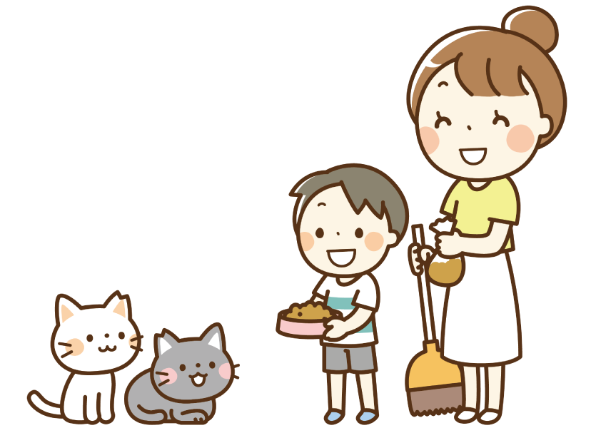

保護猫活動について
保護猫とは、さまざまな事情で飼い主を失った猫や、外で暮らしている猫たちを守る活動です。 私たちは猫の命を大切にし、人と猫が安心して暮らせる環境づくりを目指しています。
また、保護した猫たちが安心して暮らせる新しい家族と出会えるよう、里親探しのお手伝いや、地域の方々に保護猫について知っていただくための情報発信も大切な活動の一つです。
一人ひとりの小さな理解や協力が、猫たちの未来につながります。 人と猫がともに幸せに暮らせる地域を目指して、 できることから考えてみませんか。猫たちはそれぞれ違った環境で暮らしてきたため、新しい生活に慣れるまで時間がかかることもあります。一匹一匹の気持ちに寄り添いながら、安心して過ごせる環境づくりを心がけています。
小さな命を守ることは、猫だけでなく、人と地域がより良く共生していくことにもつながります。保護猫活動への理解が広がり、一匹でも多くの猫が安心して暮らせる未来を目指しています。
